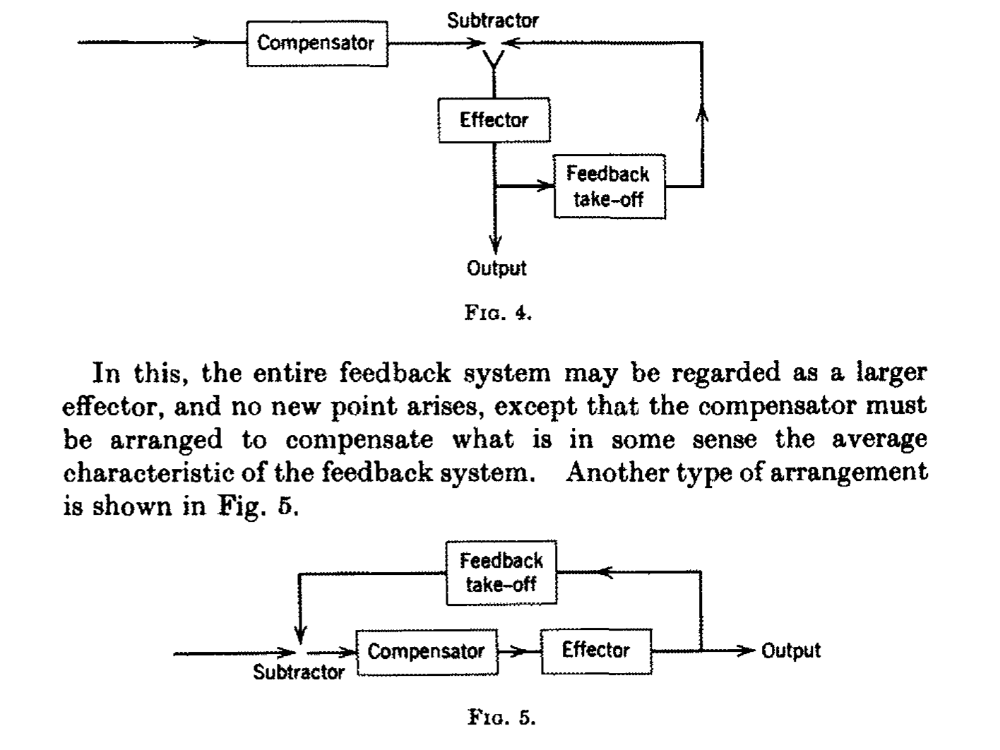
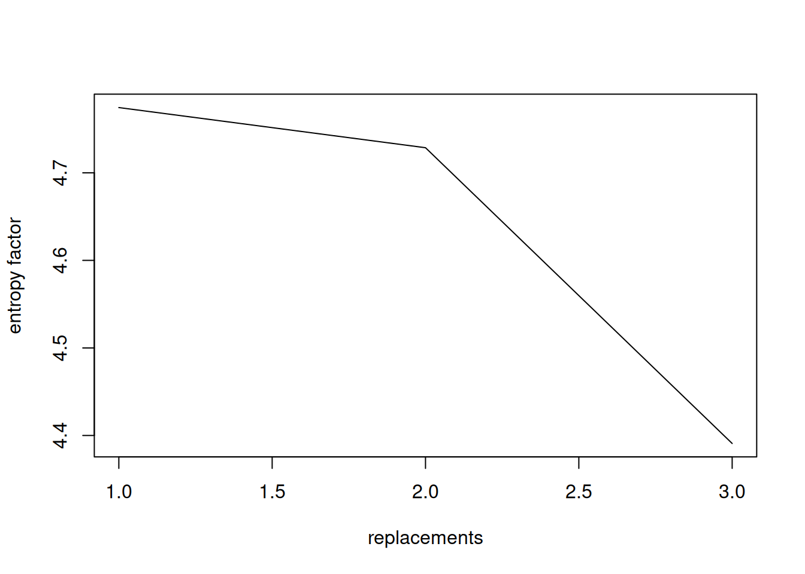

[1] "engine on..."kybernetik
Norbert Wiener - Regelung und Nachrichtenübertragung im Lebewesen und in der Maschine
paper online ::: class: [16416] Text und Textur. Vom Webstuhl bis zu Large Language Models ::: tutor: jan lietz ::: term: SS26 ::: snc: 16162.1
Textur / kybernetik
snc
16233.1
general
Norbert Wiener, der u.u. als begründer der (damals) modernen kybernetik (dem wortlaut nach…) betrachtet werden kann, war mathematiker am MIT und umreiszt in der einleitung zur 1961 (1st: 1948) erschienenen Kybernetik (Wiener (1992)) ihre entstehungsgeschichte in etwa so, dasz eine dort in den letzten Kriegsjahren des zweiten weltkriegs lockere runde von wissenschaftlern hauptsächlich der physik, mathematik, soziologie, psychologie, aber weitestgehend interdisziplinär und offen, im bestreben zusammenkam, die wissenschaft in der art offenen, fruchtbaren austauschs zu neuen, grenzüberschreitenden erkenntnissen zu geleiten.
noch während des krieges neu zu entwickelnde technologien wie zb. zur flugabwehr wurden hier unter wirklich revolutionären ansätzen, die erkenntnisse aus der mathematik und soziologie/psychologie/physiologie zu verbinden wusste, erforscht. ziel waren steuerungs/regelungsmechanismen für eine erfolgreiche flugbahnberechnung von flugzeugen, die in in erster linie auf einem rückkopplungsmodel beruhte, das selbständig, ohne weiteres eingreifen von menschen, in der lage wäre, ihre berechnungen zuerst an empfangene statusmeldungen anzupassen und weiterhin diese statusmeldungen vorauszuberechnen. in diesem sinne gleicht das model dem steuermechanismus eines schiffes, das seine fahrwerksregelung an rückmeldungen vom steuerwerk selbst fortwährend anzupassen in der lage ist.

Q: Wiener (1961)aus diesem grunde entschlossen sich die wissenschaftler, die technik bzw. “das ganze Gebiet der Regelung und Nachrichtentheorie, ob in der Maschine oder im Tier, mit dem Namen »Kybernetik« zu benennen, den wir aus dem griechischen »κvßερvήΤη~« oder »Steuermann« bildeten”. auch gouverneur udgl. ist hier etymologisch verwurzelt.
der kybernet war also zuerst der sich selbständig regelnde steuermechanismus einer maschine, eines maschinellen elements, das seine umgebung beobachtet und anpassungen der steuerung darauf ausrichtet. insofern also vielleicht schon eine kluge maschine im gegensatz zu rein prozessorientierten starren regelungsmechanismen.
zuhilfe kamen den wissenschaftlern erkenntnisse über soziologische prozesse, physiologische beobachtungen von neuronalen netzen oder auch die mathematik und biologie in natürlichen wachstumsprozessen. damit reicht das fundament der kybernetik schon sehr weit in unser heutiges verständnis dessen, was u.u. allgemein unter kybernetik verstanden wurde hinein; also eine mit durchaus menschlichen eigenschaften versehene maschine, die tätigkeiten des menschen besser, schneller und weniger fehlerbehaftet ausführen kann. das wesentliche ist hier natürlich die schnelligkeit und lernfähigkeit der maschinellen prozesse. basierend auf bestehenden rechenmaschinen, die selbst ihre anfänge in den forschungen von charles babbage und ada lovelace in den 30er jahren des 19jh genommen haben mögen, wurde deren technik an notwendige höhere rechenleistungen angepasst, die jdfs. nicht mehr rein mechanisch vonstatten ging sondern mithilfe elektronischer bauteile perfektioniert wurde. auch hier kamen wieder forschungen aus der physik, nachrichtentechnik und physiologie zusammen, um die rechenleistung effektiver zu gestalten.
und texturen…
das war grundlegendes1 aus der “einführung” der kybernetik (Wiener (1992)), die von ihm noch einmal für ein breiteres publikum umgearbeitet und eingang in Wiener (1950) fand. und wo kommen unsere :texturen: ins spiel?
wir können durchaus beim webstuhl bleiben, der ja als zentrales thema das seminar ausmacht. wir haben über den jaccard mechanismus schon einiges gehört und hier fängt es auch mit der kybernetik an. durch die einführung automatisierter abläufe in die technik [des webens], die sich damit weitgehend von der manuellen steuerung durch den menschen emanzipierte, kommen auch fragen nach dem [vielleicht: subjektcharacter] dessen, was eigentlich den vorgang steuert und das, was dabei von wem genau gewebt wird, ins spiel. wir haben es an dieser stelle nicht mehr mit menschlich-individueller bzw. im eigentlichen sinne kreativer (schöpferischer, künstlerischer) technik, sondern mit auf algoritmen, prozessual-routinierten regeln beruhenden schritten zur herstellung des produkts zu tun, die a) unendlich fein ausdifferenziert, b) unendlich weit vorausgedacht sowie c) unendlich haltbar gespeichert und abgerufen werden können [in potenz.] kann man dies von der abgelösten menschlichen fertigkeit des (webens) ebenso sagen? wahrscheinlich eher nicht. die hier hergestellte textur muss im gegensatz zur traditionellen ein element beinhalten, das un-menschlich ist; das irgendwie aus der zeit herausgelöst sein muss, die dem menschen eigentümlich ist.2 mit unendlich verfügbarem material und energie liesze sich eine textur vorstellen, die tausend menschenjahre lang sich selbst webte und (das universum?) umspannte.
feedback
wir stellen uns weiterhin vor, der maschinismus ist [der kybernet] in der lage, sein eigenes produkt fortwährend zu reflektieren, aufgrund der statusrückmeldungen seinen output zu modellieren, sich selbst dazu anzulernen, das produkt zu optimieren. am ende (des lernprozesses) würde (der teppich) vielleicht nicht mehr viel mit dem zu tun haben, was (d. programmierer* ) im kopf gehabt hat, als den algoritmus sich ausdachte. es würde vielleicht nicht mal mehr ein teppich sein, sondern u.u. etwas, das das ideal eines teppichs wäre, die Idee vom Teppich. aber das geht zu weit, nestcepas…
die texturen, die wiener referiert und die er immer wieder mit dem äther querführt, einem auch zu seiner zeit fragwürdigen, aber immernoch attraktiven konzept eines alles umspannenden, alles durchdringenden, undefinierbaren elements, das die welt im innersten zusammenhält -
(… a curious, rigid, but invisible medium known as the ether, which, at the time, was supposed to permeate the atmosphere, interstellar space and all transparent materials […])
… haben durchaus metaphysische qualitäten. in ihnen wird das unsichtbare sichtbar. der vorgestellte welt-teppich wäre am ende ein abbild der welt selbst, wenn man das konsequent zuende denkt. (ca., der kybernet: ach schau, das ja auch interessant, das fehlte noch…, na dann ab in den teppich damit :)
caveats
apropos feedback: bei wiener [!sic 1948] klingt die vorstellung der feedback loop noch durchaus vielversprechend. was aber passiert (entgegen auch meiner o.a. vorstellungen der :idee: ), wenn unser model fortwährend sich selbst referiert, wird aktuell unter dem stichwort model-collapse untersucht und sieht ca. künftige generationen von language models (also immernoch kyberneten) voraus, deren output
- zunehmend vorraussehbar (predictable)
- weniger divers
- weniger ausgeglichen
- und zunehmend eindimensional
wird.
das zeigt sich dann in zunehmenden musterwiederholungen, eindimensionalen phrasen, weniger types (unique words/tokens) und generell einer abnahme der entropie dh. die annahme eines höher organisierten (aber nicht mehr mensch-sprachlich strukturierten) zustands, der konsequent auf erstarrung hinausläuft, weil die späteren generationen eine weitgehend (inzestuöse beziehung) mit dem eigenen output eingehen. in texturbegriffe übersetzt würde unser teppich langsam den weg von einem farbenfrohen (universum der begriffe) hin zu einem diachromen gewebe aus eigentlich nur 2 zuständen, nämlich strom/nichtstrom, nehmen. wir haben es hier mit einer entropie im entgegengesetzten sinne des natürlichen verständnisses zu tun. indem die vielseitigkeit des teppichs abnimmt, die wahrscheinlichkeit von mustern höher wird, desto weniger information kann er uns geben.
Wiener (1950) : 21
Just as entropy is a measure of disorganization, the information carried by a set of messages is a measure of organization. In fact, it is possible to interpret the information carried by a message as essentially the negative of its entropy, and the negative logarithm of its probability. That is, the more probable the message, the less information it gives. Cliches, for example, are less illuminating than great poems.
d.h. dieser von einem nahe collabierenden model produzierte teppich is no news at all.
see: model-collaps for a nice experiment on modeling with a small corpus.
lektürefragen (class, not mine)
- flora: Wie lässt sich die ästhetische Qualität eines Textes beschreiben, der – um überhaupt verständlich zu sein – auf vertrauten sprachlichen Konventionen aufbauen muss?
- tilman: »Die bekannte Shannonsche Beziehung […] gibt das Maß der Information in Bezug auf eine Quelle, welche die Zeichen (Worte) Zi mit der Wahrscheinlichkeit pi auftreten lässt (sendet).« (S. 79). 2.1 Kann man in dieser Beschreibung der Information-Zeichen-Beziehung eine Vorwegnahme der Funktionsweise von Large Language Models erkennen?
- josefine: Eine höhere Entropie erhöht laut Bense denn Informationsbetrag, aber wo ist da die Grenze zum Chaos? Also wann wird aus Unvorhersagkeit (bzw. Unordnung) nur noch Unverständlichkeit?
meine ideen dazu:
- die sache mit der wahrscheinlichkeit ist genau das primaere prinzip von LLMs, die über einen vektorraum aus wahrscheinlichkeiten (embeddings) die relation (entfernung) der einzelnen vektoren (das können wörter, zeichen, sätze…, aber auch alles andere sein, das mit einer bestimmten wahrscheinlichkeit zu einem ort und zeit auftritt.) also jede entität bildet einen vektor ab und das model (also eigentlich der mit einem eben large space aus embeddings bestückte datensatz, der von dem algoritmus, also dem eigentlichen model [die embeddings sind die tensors bzw. der latent space, der dann fixiert ist, wenn man das model auf eine menge an daten trainiert hat]) bestimmt grob die entfernung (vektoren sind immer mindestens 2-dimensional) der beiden entitäten zueinander innerhalb des vectorspace. damit lassen sich dann entweder texte generieren (indem man jeweils die höchstwahrscheinlich folgenden entitäten bestimmt) oder classification tasks ausführen, bilder generieren usw.
Insofern, glaube ich: die KI, mit der wir arbeiten, sieht nicht mehr die zeichen bzw. kann damit nix anfangen und interpretiert sie schon gar nicht; für sie ist nur interessant, wo in einem n-dimensionalen raum aus zeichen sich unser zeichen befindet (zb. der prompt, das bild etc.) / deshalb, um nicht nur mist zu produzieren (s.o. model-collapse experiment), sind eben grosze datenmengen zum training erforderlich; damit die menge an wahrscheinlichkeiten, aus denen die KI (der agent) dann wählen kann (zu denen sie das prompt in beziehung setzen kann.) In Benses/Peirces zeichentheorie hätten wir (denke ich) es bei den zeichen, die die KI noch sieht, nur mit ikonischen zeichen zu tun, also nur anzeiger dessen, was gesagt wird, ohne weitere einbetttung anderer werte (metaphern, figurative language etc. kann von dem model nicht verstanden oder gesehen werden, sondern nur berechnet. in dem zitat unten sieht die KI nur den strich und das papier, aber “weisz” nicht aus nur dem was sie sieht, ohne weitere berechnung, das der bleistift geführt werden musste von jemandem, blei giftig ist, papier aufweicht etc. dh. der strich als zeichen hier sagt nicht mehr über sich selbst aus, als dasz er ein strich ist [sein eigener vektor]. ein A ist ein A; nicht der anfang des alphabets, nicht der anfang von Anfang, sondern nur ein A und kein B.)
An icon is a sign which would possess the character which renders it significant, even though its object had no existence; such as a lead-pencil streak as representing a geometrical line. (Hoopes (1991) : 1)
on entropy again
script
calculate_entropy <- function(text_string,SPLIT) {
chars <- unlist(strsplit(text_string, SPLIT))
#length(chars)
probs <- table(chars) / length(chars)
# table() just counts frequency of distinct units here, length() is the number of all units
# his is whats called type/token ratio, so how many tokens (chars, words) occur per distinct unit
# also called "lexical diversity" of a text when applied at word level: more distinct words = higher ratio
probs <- as.numeric(probs)
entropy <- -sum(probs * log2(probs))
entropy
}
t<-readLines("textur002.qmd") # reads in this paper
t1<-t
t2<-gsub("g","h",t) # eliminate 1 char
t3<-gsub("[ghi]","e",t) # eliminate 3 chars
e1<-calculate_entropy(t1,"") # original text
e2<-calculate_entropy(t2,"") # all "g" replaced by "h"
e3<-calculate_entropy(t3,"") # all "g,h,i" replaced by "e"
e4<-calculate_entropy(t,"\\s+") # word entropy
c1<-length(unique(unlist(strsplit(t1,"")))) # count of units (more than alphabet, its a mixed script!)
c2<-length(unique(unlist(strsplit(t2,""))))
c3<-length(unique(unlist(strsplit(t3,""))))
c4<-length(unique(unlist(strsplit(t1,"\\s+"))))entropy table
| id | units | entropy | explique | comment |
|---|---|---|---|---|
| 1 | 101 | 4.792221 | original text | natural character distribution |
| 2 | 100 | 4.746499 | all [g] replaced by [h] | modified slightly |
| 3 | 98 | 4.410767 | all [g,h,i] replaced by [e] | modified heavier |
| 4 | 1022 | 9.320101 | word entropy | word level, compared to character (ID 1) |
character/word level entropy
we see, that when replacing characters (eliminate them from text and replace by others) the entropy drops, showing a higher predictability = less information by less unique characters (cf. Leipzig Corpora Collection (2024); Entropy: ~11.7 in german newspaper corpus.)
according to shannon entropy
which you see in the application of formula Equation 1 in the script, where the negative sum of all probabilities of units is multiplied by the log2 (“bits” of information, logarithmus zur basis 2) of these probabilities (cf. Shannon and Weaver (1949) : 23).
\[H(X) := -\sum_{x \in \mathcal{X}} p(x) \log2 p(x) \tag{1}\]
plot
[1] "e1" "e2" "e3"
references
Hoopes, James. 1991. Peirce on Signs : Writings on Semiotic by Charles Sanders Peirce. Chapel Hill: The University of North Carolina Press. https://research.ebsco.com/linkprocessor/plink?id=a9a3efb1-5475-33bf-abc2-9ebba3344432.
Leipzig Corpora Collection. 2024. “Korpus: Deu_news_2024_10K, 3.10.5 Entropy.” In German Newspaper Dictionary Based on Material Crawled in 2024. https://cls.wortschatz-leipzig.de/de/deu_news_2024_10K/3.10.5_Entropy.html.
Shannon, C. E., and W. Weaver. 1949. The Mathematical Theory Of Communication. University of Illinois Press. http://archive.org/details/in.ernet.dli.2015.503815.
Wiener, Norbert. 1950. The Human Use of Human Beings : Cybernetics and Society / Norbert Wiener, Professor of Mathematics at the Massachusetts Institute of Technology. Boston: Houghton Mifflin Company.
———. 1961. Cybernetics or Control and Communication in the Animal and the Machine. Boston: MIT Press. http://archive.org/details/wiener-1938.
———. 1992. Kybernetik: Regelung Und Nachrichtenübertragung Im Lebewesen Und in Der Maschine (MIT, 1948). 2nd ed. Econ Classics. Düsseldorf u.a: ECON-Verl.
Footnotes
ich musz zugeben, ich komme mit den beiden seminaren literatur/KI und textur etwas durchenander, es lohnt sich aber auch (von hier) einmal dort zu schauen, was sich so überschneidet…↩︎
das wären dann auch die fragen in die runde, vielleicht mit inverse focus: 1. was ist das spezifische (momentum), das eine explizit nicht künstliche textur von einer solchen unterscheidet? 2. was wären weitere begriffe aus dem noch-handwerklich/manuellen bereich, die sich auf nicht-künstliche textur (im weitesten sinne, literarische texturen/gewebe/strukturen einschlieszend) im gegensatz zu künstlicher anwenden lieszen? 3. an welchen stellen wir es mit faszbaren im gegensatz zu abstrakten oder virtuellen strukturen zu tun?↩︎